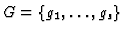
its Gröbner basis with respect to a block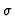
in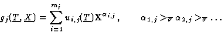
_{\overline{\sigma}}\alpha_{2,j}>_{\overline{\sigma}}\ldots \end{displaymath}">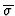
the restriction of to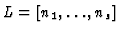
with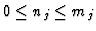
, the specialization condition defined by L is given by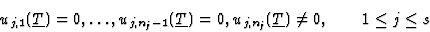
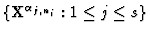
agrees with the Hilbert Function of the monomial ideal generated by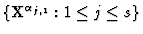
then the specialization of G is a Gröbner Basis of the specialization of J (with respect to ). This consequence of corollary 1 provides a nice way of computing a set of conditions which are good for specializing the Gröbner Basis of J already computed in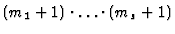
) the following lemma and its remarks show how to know in advance that such a condition list is bad once one such list has been previously classified as bad.
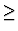
be the ordering introduced in the set of conditions lists for G defined by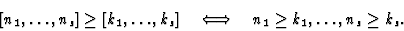
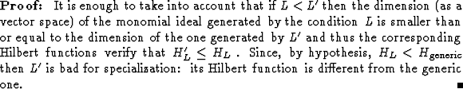
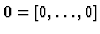
provides a good specialization condition. Next, it is analyzed the case of the vanishing of some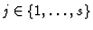
the biggest (for ) conditions lists for G with only one non zero element which are good for specialization. Once these lists have been determined, we know, by the previous lemma that we do not need to consider any conditions list for G strictly bigger than one of such lists. Proceeding in a similar way with the case of only two, three, etc non-zero elements and with conditions lists not strictly bigger than those already located in the previous step, we exhaust all the possibilities.
Graphically this means that, for this Gröbner Basis,
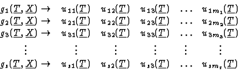
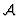
of all lists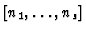
with (the different specialization conditions), we are looking for the maximal elements of the subset: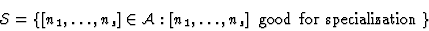
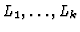
are these maximal elements of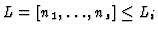
then the verification of the conditionsIn conclusion, every maximal element
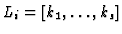
of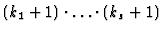
conditions with each one having the structure showed in 2. This procedure, as it has been explained taking only into account the set , can be easily optimized if we take also into account the structure of the polynomials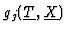
's: for example, if it is known that the coefficient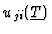
is a non zero constant then we can discard directly from the set those lists whose j-th element is bigger than i.